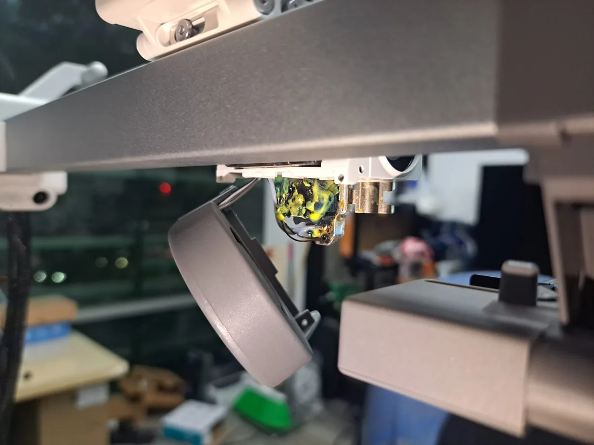
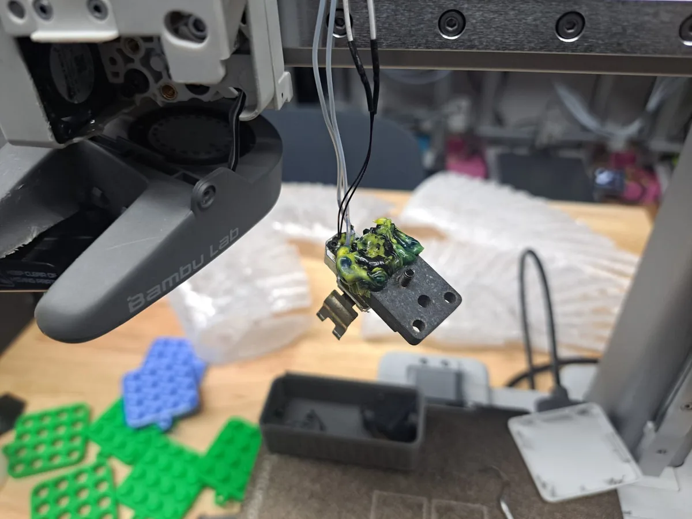
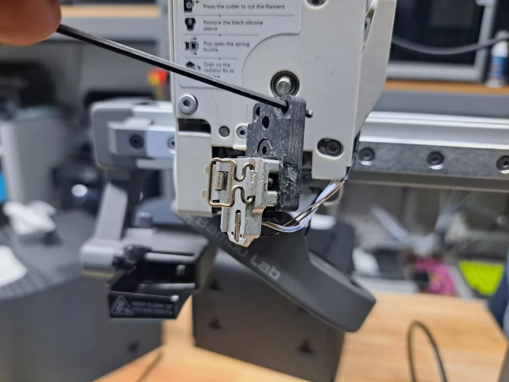
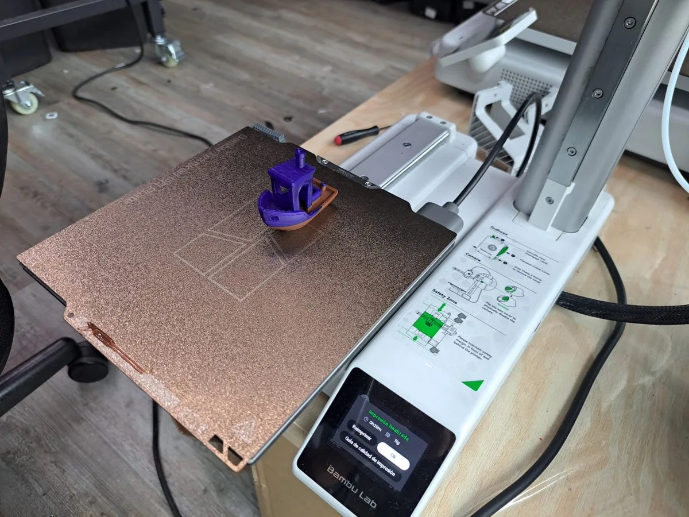
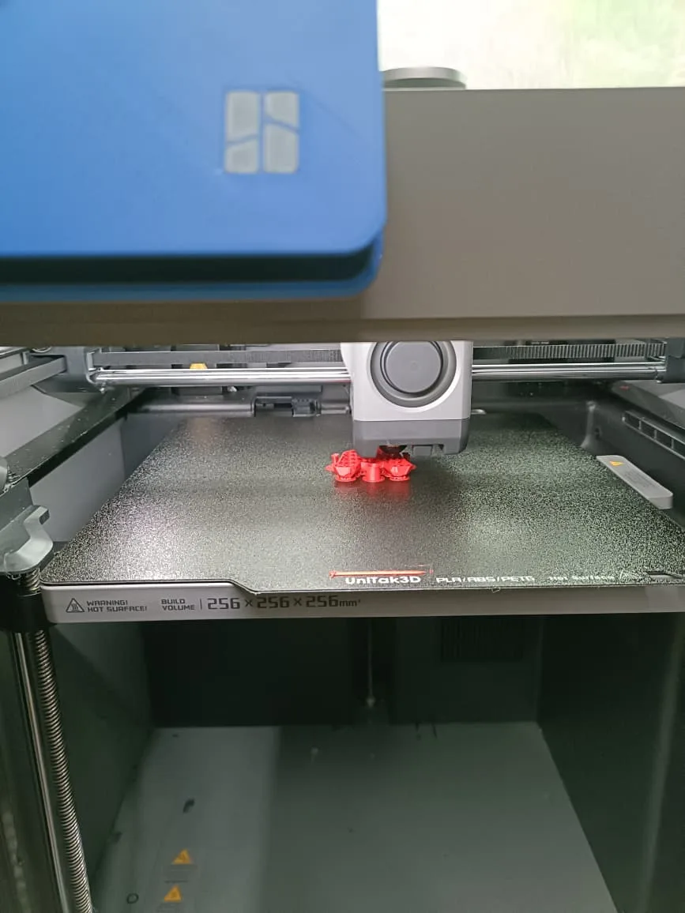

Bola de filamento en el hotend: cómo se forma y qué hacer
· Caso del taller
Dejas una impresión corriendo y al regresar el cabezal es una piedra de plástico. Es de las fallas que más asustan y casi siempre empieza igual: algo dejó de salir por donde debía y el filamento siguió saliendo. Te contamos dos casos que nos llegaron y qué hicimos con cada uno.

Cómo se forma la bola
La boquilla sigue empujando filamento aunque ya no haya pieza abajo. Pasa cuando la pieza se despega de la cama, cuando la boquilla se tapa a medias y el plástico se sale por arriba, o cuando el material se enrosca alrededor del bloque en lugar de caer. El plástico caliente se pega al bloque, se enfría, se le pega más encima y en pocos minutos cubre el hotend, los cables y a veces el ventilador.
La impresora no siempre se da cuenta. Mientras el filamento avance, para ella todo va bien.
Caso 1: una A1 mini cubierta de filamento
La boquilla se tapó, la impresora siguió calentando y derritiendo filamento, y al enfriarse quedó una masa seca cubriendo todo el cabezal. Así nos llegó.
Desmontamos el hotend del cabezal con todo y la masa, con cuidado de no jalar los cables del calentador ni del sensor de temperatura. Ya fuera, retiramos el filamento pegado, revisamos el cabezal abierto, armamos, calibramos y la pusimos a imprimir.




Caso 2: una P2S y una pieza que no pegó
El dueño nos dijo que el filamento se atoró a la mitad de una impresión. Lo que encontramos fue la boquilla tapada por una acumulación de filamento. La causa no estaba en el hotend: la pieza no se adhirió a la cama, se movió y la boquilla terminó extruyendo sobre sí misma.
Quitamos y limpiamos el atasco, y limpiamos la placa para que el plástico volviera a pegar. Hicimos pruebas en otra placa del taller y al final en la placa del cliente, para confirmar que con la superficie limpia la pieza se queda en su lugar.

Si ya tienes la bola: qué hacer y qué no
- No la arranques en frío. El plástico frío está pegado a los cables. Si jalas, puedes romper el cable del calentador o del sensor de temperatura.
- Calienta la boquilla a la temperatura de impresión de ese material para que el plástico se ablande, y retíralo poco a poco con pinzas. Cuidado: todo está caliente.
- Si la masa cubre cables, el ventilador o el interior del cabezal, mejor no sigas. Ahí ya hay que desmontar el hotend.
- Después de limpiar, revisa que la temperatura suba normal y haz una purga antes de imprimir algo largo.
Cómo evitar que vuelva a pasar
- Placa limpia. Lávala con agua y jabón para trastes y no la toques con los dedos. Es la causa más común de piezas que se despegan.
- Mira la primera capa. Si no pega bien, detén la impresión ahí. Una primera capa floja es una bola de filamento en camino.
- Calcetín de silicón puesto y en buen estado. Hace que el plástico se pegue menos al bloque.
- Usa la cámara y la detección de fallas si tu impresora las tiene, sobre todo en impresiones largas.
- Filamento seco. El filamento húmedo truena, deja hilos y tapa la boquilla más fácil.
Cuándo conviene traerla
Si la masa cubre los cables o el ventilador, si después de limpiar la boquilla no calienta o marca error de temperatura, o si sigue sin extruir, tráela. Desmontamos el hotend sin forzar los cables, te mandamos fotos de lo que encontramos y la cotización antes de cambiar cualquier pieza.
Sigue leyendo
¿Tu impresora tiene algo parecido?
Diagnóstico en el taller con fotos de lo que encontramos y la cotización antes de cambiar cualquier pieza. Recibimos impresoras de todo México por paquetería.